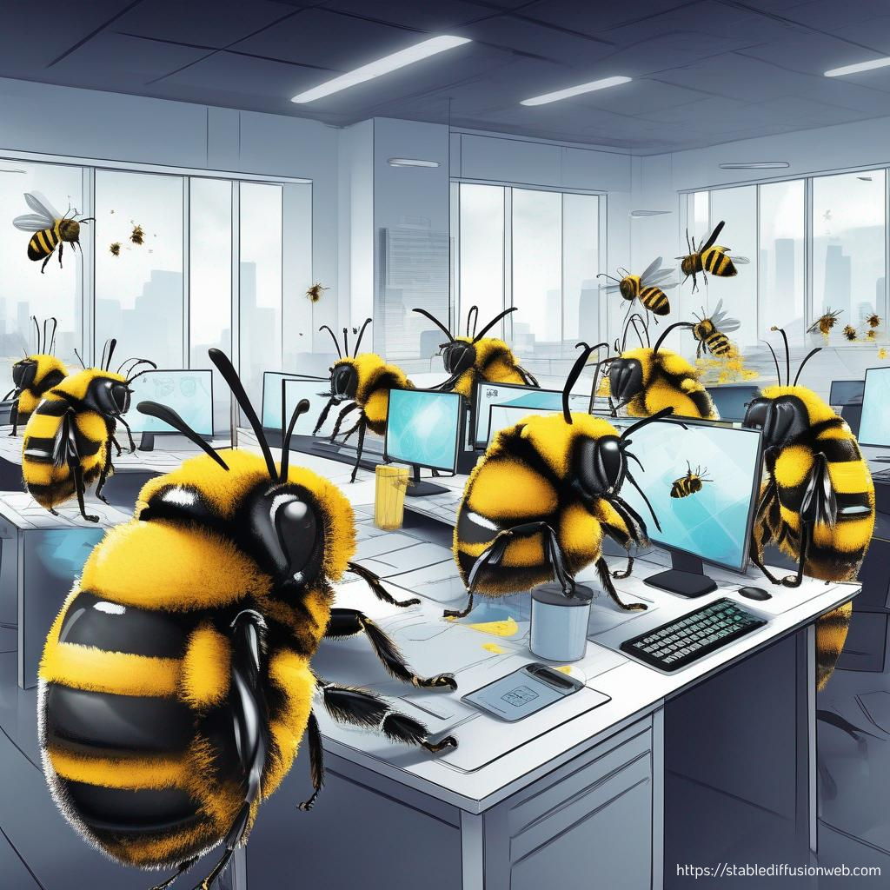
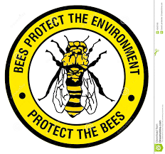
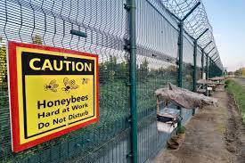

About Us
Welcome to the Bee's Protection Agency. We are dedicated to protecting and preserving the vital pollinators that are essential to our ecosystem.
Our Mission
Our mission is to protect bee populations through research, education, and conservation efforts. We work with communities, schools, and organizations to promote sustainable practices that support bee health and habitat preservation.
Our History
The Bee's Protection Agency was founded in 2020 by a group of passionate environmentalists who recognized the critical role bees play in our world. Since then, we have grown into a leading organization in bee conservation.
Our Team
Our team is made up of dedicated professionals and volunteers who are committed to making a difference for bees and the environment. We are scientists, educators, and advocates working together to create a better future for bees.
Why Bees Matter
Bees are critical for pollinating plants and crops. They contribute to one-third of the food we consume, including fruits, vegetables, and nuts. Without bees, our food supply would be significantly affected, leading to food scarcity and higher prices.
Our Conservation Efforts
We actively participate in and promote various conservation projects aimed at protecting bee habitats. This includes planting bee-friendly gardens, reducing pesticide use, and supporting sustainable agricultural practices. Through our efforts, we aim to create environments where bees can thrive.
Community Involvement
Community involvement is at the heart of our mission. We organize workshops, educational programs, and community events to raise awareness about the importance of bees and how everyone can contribute to their protection. Our goal is to inspire and empower individuals to take action.
Research and Innovation
Innovation is key to our approach. We collaborate with scientists and researchers to develop new methods for bee conservation. This includes studying bee behavior, health, and genetics to find ways to improve their resilience and survival rates.

Get Involved
There are many ways you can help protect bees. Planting bee-friendly flowers, reducing pesticide use, and supporting local beekeepers are just a few. You can also volunteer with us, participate in our events, or make a donation to support our projects. Together, we can make a difference for bees and the environment.